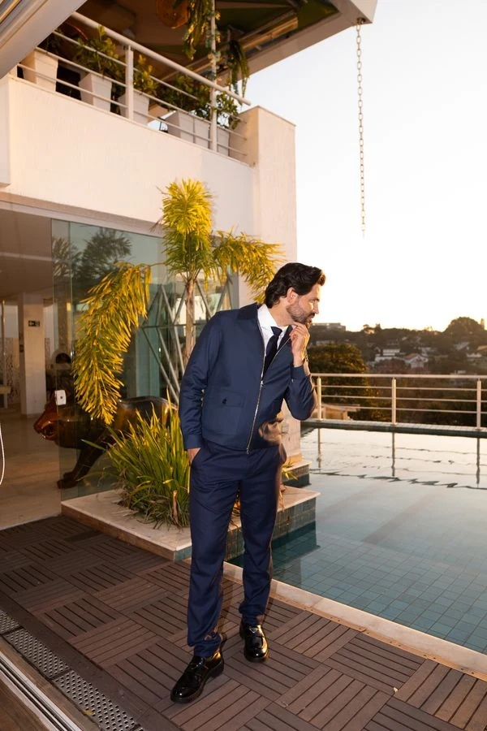

Olhar
Uma leitura de face que vem antes da seringa e orienta toda a decisão.
4, 5 e 6 de dezembro · turma para 12 profissionais
Três dias para olhar, planejar e executar Full Face com mais critério — ao lado do Dr. Ritchie.
Quero falar com a equipeÉ tempo de prática, discussão e decisões clínicas feitas de perto. Um formato para quem não quer mais repetir protocolos sem saber o porquê.
O conhecimento acontece entre a bancada, a conversa e a confiança de acompanhar cada detalhe ao vivo.

Uma leitura de face que vem antes da seringa e orienta toda a decisão.
Raciocínio clínico para construir caminhos, não copiar respostas prontas.
Prática em pacientes reais, acompanhada em cada etapa.
Discussão honesta sobre técnica, resultado e o próximo caso.
Avaliação, planejamento e o que sustenta uma decisão segura em Full Face.
Prática acompanhada e discussão de cada caso no momento em que ele acontece.
Refinamento técnico, análise de resultado e repertório para continuar.
Um olhar conhecido por unir técnica, estética e raciocínio clínico com clareza. Na imersão, ele conduz os casos e as perguntas que mudam uma prática.
“A técnica do Ritchie é genial. Para mim, foi um divisor de águas.”
“A prática e o raciocínio por trás de cada caso mudaram minha segurança.”
“É a experiência que leva sua leitura clínica para outro nível.”
Toque nas afirmações que descrevem o seu momento. Não é uma prova — é só um jeito de perceber onde você está.
A equipe apresenta o investimento e as formas de pagamento pelo WhatsApp, de forma direta e sem compromisso.
Quero saber valores e condições